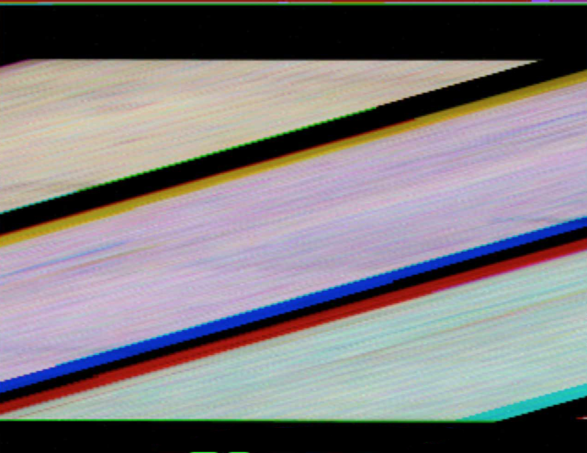
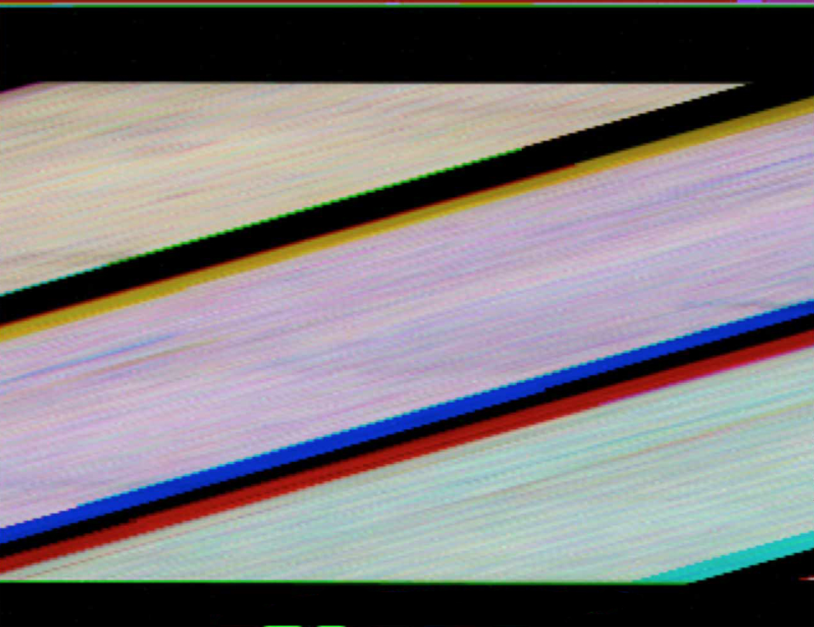
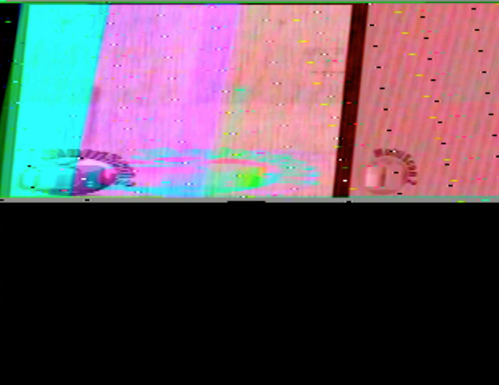
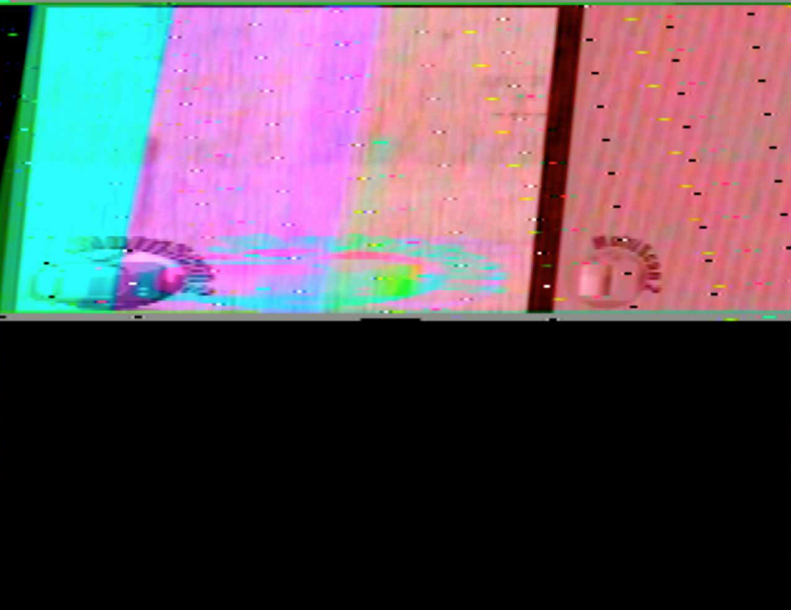
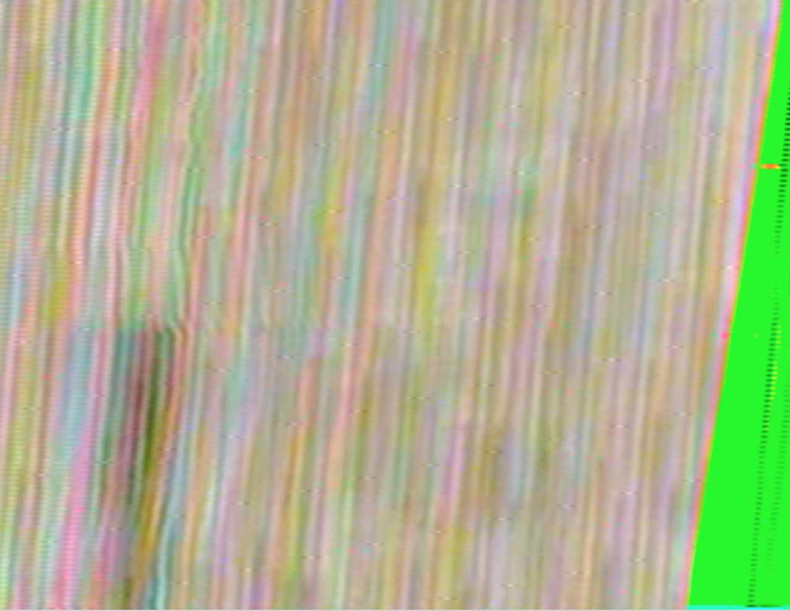
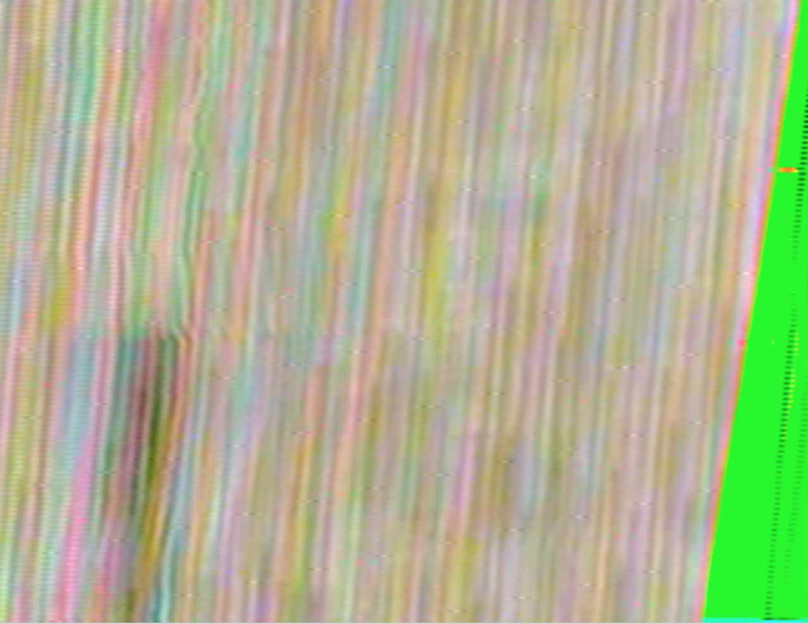

Here is a sample of some of the images from tests made using digital sstv with the software MultiScan.
I've tested the transmission of the images recording the sound generated, instead of transmitting the signal over HF or VHF bands as it is traditionally done.
Initially, the sound was recorded from the computer microphone and received from it's built in microphone,
then I've used software soundflower for send and receive the sound directly in the computer, which created some interesting and sometimes awful distortions,
and finally, a headphone with microphone was used for generating a very clean image.
* images to be uploaded following


 

 


 



.